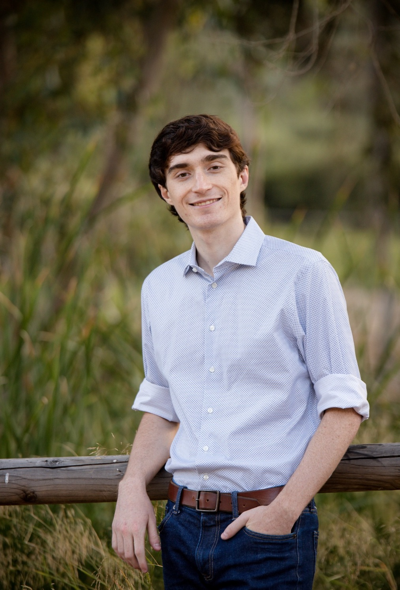

<div class="about">
    
    I am a first year MS of Computer Science student at Georgia Tech, specializing in machine learning. 
    Before coming to Atlanta, I was working as a member of technical staff at RAM Laboratories in San Diego,
    where we did R&D pertaining to security, advanced analytics, modeling and simulation, and more. My contributions
    in particular include work on fuzzing, natural language processing, social media analysis, firmware analysis,
    and machine learning security.

    Before that I was a student at the University of California, Irvine, where I studied computer science.

    My resume can be found <a href="assets/files/resume.pdf">here</a> and I can be reached at jbeel3 AT gatech DOT edu.
</div>